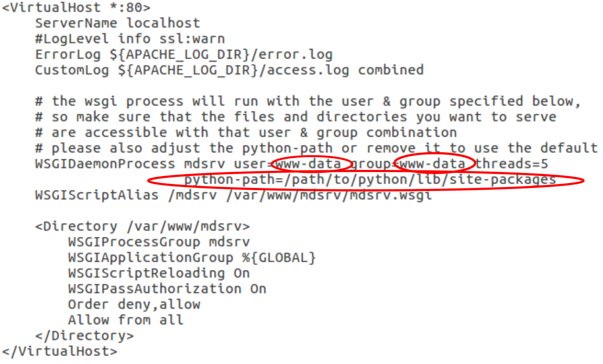

Installation & Deployment
MDsrv is working under Linux and Mac OS systems. Support for Windows is currently under development.
1. Install the MDsrv
The latest stable release of MDsrv can be easily installed via PyPI.
pip install mdsrv
Conda support is currently under development.
To install the development version, download it from the
MDsrv GitHub page and install it manually (via executing setup.py within the repository).
Pip needs to be installed in advance to add underlying tools otherwise an installation error (e.g. "import setuptools not found") might rise.
For further information, consult the setuptools documentation.
Deployment even on your local machine - why?
With step 1, you can already use the MDsrv locally within your network. In order to add the MDsrv into your daily research, deploy and configure it to your system and your settings. The advantage is that you can add project folders permanently, including their security settings. By setting up an apache server (locally on your machine or global on a webserver), you are able to share your sessions and files with colleagues within the same network, collaborators or reviewers. Additionally, you can add a link to your cluster and inspect your unprocessed simulations remotely.
2. Install Apache2 and WSGI
To serve MDsrv as an Apache Webserver via mod_wsgi, install apache2 and libapache2-mod-wsgi to your system.
sudo apt-get install apache2 libapache2-mod-wsgi
3. Add MDsrv-wsgi settings to apache.config
Add the content of apache.config into /etc/apache2/sites-available/000-default.conf or replace this file.
Important: Adjust the user and group according to your environment settings (e.g. local installation on a pc (nickname@pc) with user=nickname and group=nickname) so that the wsgi process can run with the specified user & group. Make also sure that the files and directories you want to serve are accessible with that user & group combination. For further information on apache.config, please consult the documentation.
4. Add html for MDsrv gui
Copy mdsrv.html into the folder /var/www/html/.
5. Add & adjust the MDsrv configuration file
Download the configuration file app.cfg and save it within a secure directory (e.g. not within /var/www/hmtl/). Here, you can change the host and port, the list of directories where you store your structure and trajectory files (DATA_DIRS) and the security settings. The content and setting is explained elsewhere.
6. Place mdsrv.wsgi
Generate a folder mdsrv in /var/www/ and place mdsrv.wsgi into this folder (/var/www/mdsrv/mdsrv.wsgi). Add the path of the configuration file (app.cfg) into the mdsrv.wsgi file including the name of the file (APP_CFG = '/home/nickname/important/app.cfg'). Restart now the apache server.
7. Restart the apache server
Whenever the app.cfg file is changed, the apache server has to be restarted. If content within the directories is changed, a restart is not necessary. To restart execute
sudo /etc/init.d/apache2 restart
sudo service apache2 restart8. Access & Visualize your simulations
The MDsrv with the structures and trajectories within the defined folder can be reached at http://localhost/mdsrv.html by loading a structure via "File -> Import" and adding afterwards the trajectory within the structure menu by selecting "Remote trajectory - import".
More
If you have any questions, found some bugs, or want to report enhancement requests use the Issue Tracker, use the contact formular or write a mail to johanna.tiemann@gmail.com or alexander.rose@weirdbyte.de.
Please give us feedback!